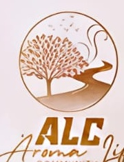
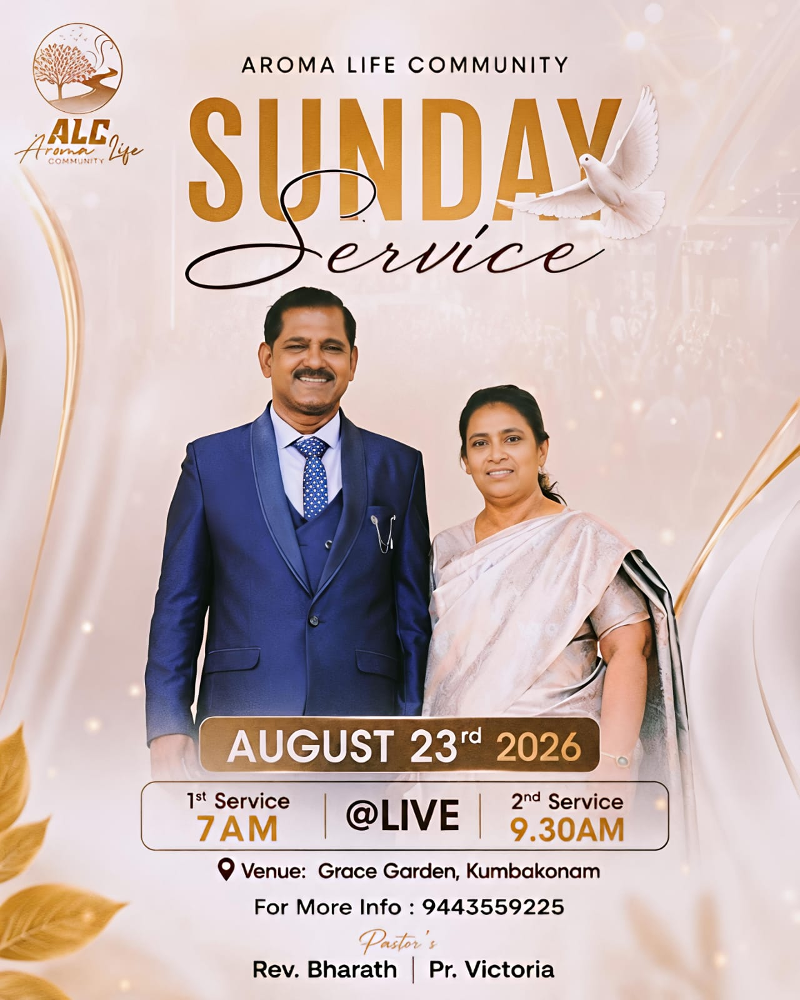
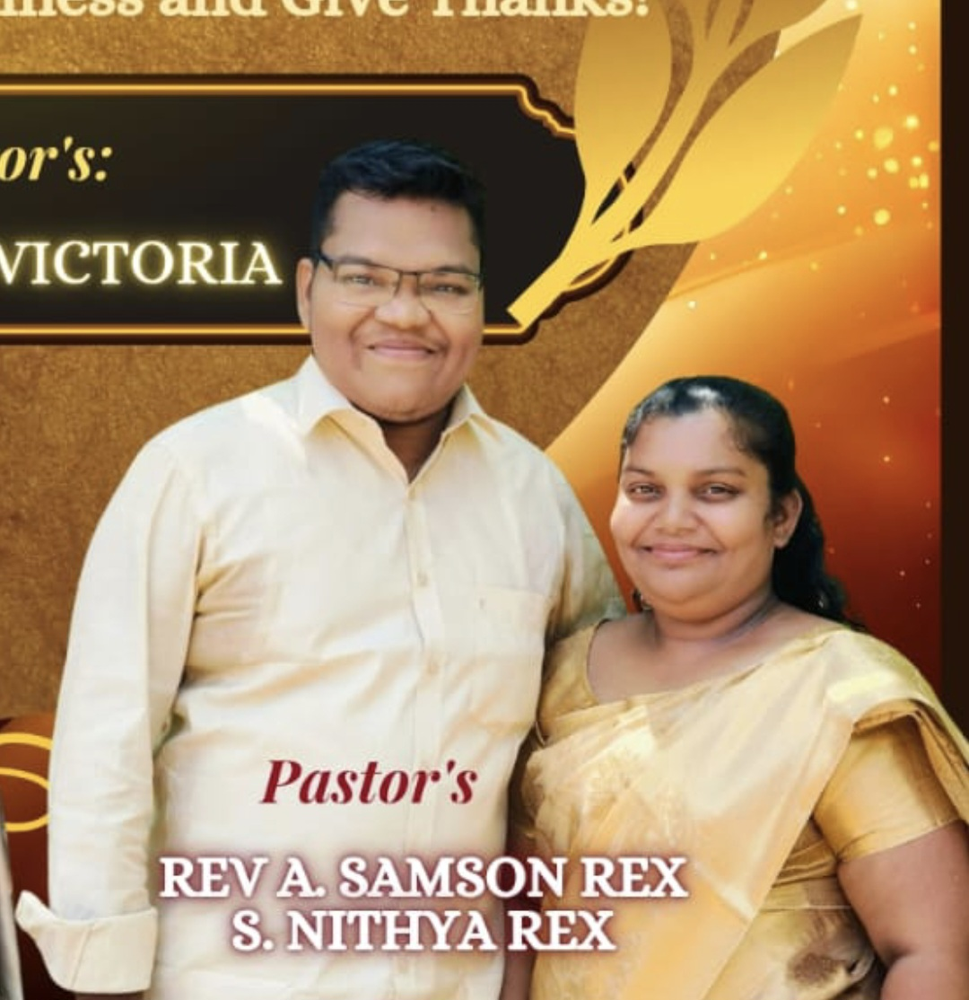

Rev.G.Bharath
Pastor

AROMA LIFE COMMUNITY CHURCHWELCOME TO ALC
Aroma Life Community Church — a community of faith, prayer, fellowship and hope.
JOIN US
PLAN YOUR WEEK
Our recurring prayer, fellowship and worship activities. Dates are calculated automatically for the current week.
ABOUT ALC
Aroma Life Community Church is a welcoming community where people can come together to worship, pray, learn and grow in God's love.
This space is ready for ALC's official story, vision, mission and beliefs. Once you provide the church's approved wording, it can be added here without changing the design.
Come worship with us →
OUR LEADERSHIP
Pastor
Sister
Assistant Pastor
Assistant Sister
EVENTS & FELLOWSHIP
At Aroma Life Community Church, we’re more than just a congregation—we’re a family that grows, worships, and walks through life together. From heartfelt worship to joyful fellowship, every moment is a chance to connect, belong, and experience God’s love.
Ask About Upcoming Events
MEMORIES & MOMENTS
More event photographs can be added to the assets folder and listed here as ALC events grow.
VISIT ALC
Join us for Sunday worship or connect with us during the week.
Venue
676/B, Grace Garden, Aatrangarai Road (near Ammaathoppu, Muthupillai Mandapam), Kumbakonam, Tamil Nadu, India.
Phone
94435 59225
YouTube
Aroma Life Community
SUNDAY